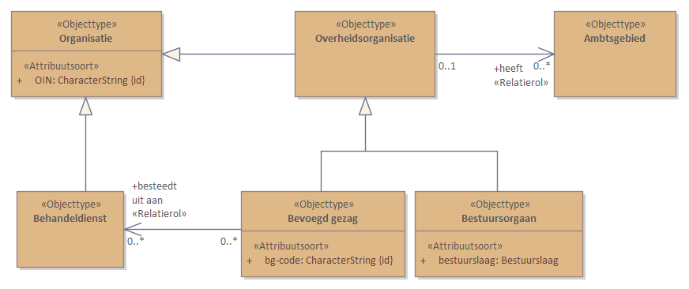

Dit is een werkversie die op elk moment kan worden gewijzigd, verwijderd of vervangen door andere documenten. Het is geen stabiel document.
1. Voorwoord
Dit document is tot stand gekomen binnen het programma DSO-Omgegevingswet. Het bevat de formele vastlegging en beschrijving van het Conceptuele Informatiemodel.
Dit conceptuele informatiemodel volgt de regels voor opstellen van een informatiemodel zoals vastgelegd in de MIM standaard en wordt uitgedrukt in UML.
2. Inleiding
TODO
3. Toepassingsgebied
TODO
4. Overzicht
TODO
4.1 Normatieve referenties
TODO
4.2 Termen en definities
TODO
4.3 Symbolen en afkortingen
Lijst van afkortingen en acroniemen die worden gehanteerd in deze
dataspecificatie.
TODO nader in te vullen
5. Gegevensdefinitie
5.1 CIM-EX -overzicht
Figuur 1
CIM-EX -overzicht
5.2 Objecttypen
5.2.1 Behandeldienst
Naam
Behandeldienst
Definitie
Een externe partij die namens een bevoegd gezag aanvragen behandelt, zoals een omgevingsdienst.
Het orgaan dat een verzoek beoordeelt en een besluit daarover neemt. In het kader
van de Omgevingswet worden hiermee het Rijk, provincies, waterschappen en gemeenten
bedoeld.
Overheidsorganisatie
is specialisatie van
Organisatie
5.2.5 Bestuursorgaan
Naam
Bestuursorgaan
Definitie
Het orgaan dat de juridische regels opstelt, de activiteiten en toepasbare regels
aanlevert en de activiteiten toepasbaar maakt. In het kader van de Omgevingswet worden
hiermee het Rijk, provincies, waterschappen en gemeenten bedoeld.
De verzameling van waarden die gegevens van dit attribuutsoort kunnen hebben, dat
wil zeggen het waardenbereik, uitgedrukt in een specifieke structuur.
Indicatie kardinaliteit
1
Indicatie classificerend
Nee
Mogelijk geen waarde
Nee
Indicatie identificerend
Ja
5.3.1.2.2 Relatiesoort details Bevoegd gezag besteedt uit aan
Naast onderdelen die als niet normatief gemarkeerd zijn, zijn ook alle diagrammen, voorbeelden, en noten in dit document niet normatief. Verder is alles in dit document normatief.